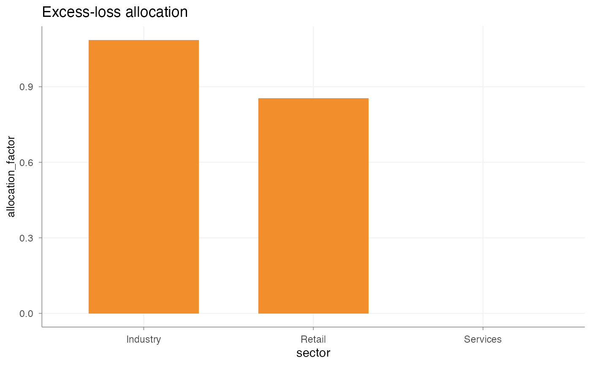

Calculate an excess-loss vector for capped severity modelling
Source:R/excess_loss.R
calculate_excess_loss.RdEstimate and allocate the expected cost of large claims above a chosen cap.
In pricing work, a severity model is often fitted on capped claim amounts,
for example pmin(claim_amount, 100000), because very large claims can be
too sparse or volatile to model directly in the regular severity GLM.
calculate_excess_loss() helps add this missing part back in by estimating
the claim cost above the cap and allocating that amount to the selected
portfolio rows. The resulting vector can then be added to the technical risk
premium or pure premium.
The excess-loss amount is part of the technical risk premium. It is not meant
as a commercial loading or margin. add_excess_loss() can be used afterwards
to copy the calculated vectors to a data frame without recalculating them.
method determines the total excess-loss amount:
"empirical"Uses the observed excess above
excess_threshold. This is transparent and easy to reconcile, but sensitive to a few very large claims."bootstrap"Bootstraps claims above
fit_thresholdand calculates the excess aboveexcess_thresholdin each sample. This keeps the method data-driven while giving a sense of sampling variability in sparse large-loss experience. Withbootstrap_smooth = TRUE, the sampled large claims are perturbed around their observed values usingbootstrap_bandwidth. This avoids relying only on exact historical claim amounts and can be useful when large-loss experience is sparse, discrete or strongly influenced by a few individual claims."manual"Uses
manual_excessas the total excess-loss amount. This is useful when the amount comes from expert judgement, governance, reinsurance information or an external benchmark.
allocation_method determines how the total excess-loss amount is allocated
back to rows:
"exposure"Allocates in proportion to
allocation_weights, with allocation factor 1 for selected rows. In practice this means that every selected row receives the same excess-loss loading per unit of allocation weight, for example per unit of earned exposure. This is the most stable choice when large-loss experience is too sparse to support a credible split between groups."historical_excess"Derives allocation factors from observed excess above
excess_thresholdper allocation group. Groups that produced more observed excess receive a larger allocation factor, after allowing for their allocation weight. This is more risk-sensitive than exposure allocation, but can be volatile when a few large claims dominate the experience."bootstrap_excess"Derives allocation factors from bootstrapped excess shares per allocation group. For each bootstrap sample the excess share by group is calculated, and the average share is translated into an allocation factor. This is a smoother data-driven alternative to using the raw historical excess shares, especially when large losses are sparse but you still want the allocation to reflect observed group differences.
"factor"Uses a user supplied
allocation_factorcolumn. This is appropriate when the allocation follows a pricing, underwriting or governance decision rather than the observed large-loss split alone. For example, a factor can restrict allocation to selected segments or give one segment a higher share based on expert judgement.
The allocation arguments work together as follows. allocation_by and
allocation_levels define the part of the portfolio that receives the
excess-loss component, for example selected industry groups or coverage
segments. Rows outside those levels receive allocation factor 0. Within the
selected part, allocation_weights defines the volume measure used to spread
the amount, usually exposure or another earned-volume measure.
allocation_factor is the row-level multiplier used in the allocation base:
allocation_base = allocation_weights * allocation_factor. A factor of 0
means no allocation, 1 means standard allocation, and values above or below 1
allocate relatively more or less excess-loss to that row or group. For
allocation_method = "exposure", the factor is 1 for selected rows. For
allocation_method = "historical_excess" and "bootstrap_excess", the
factor is derived so that the final allocation follows the observed or
bootstrapped excess shares by group, after allowing for allocation_weights.
For allocation_method = "factor", the factor is read directly from the
column named in allocation_factor.
output determines which row-level vector is returned directly. All variants
are also stored as attributes, so add_excess_loss() can add several
diagnostic columns without recalculating.
fit_threshold and excess_threshold have different roles. fit_threshold
determines which claims are used as large-loss information. excess_threshold
determines which part is added as excess-loss. With fit_threshold = 20000
and excess_threshold = 100000, claims between 20k and 100k are sampled in
bootstrap methods but contribute zero excess through
pmax(sampled_amount - excess_threshold, 0).
Usage
calculate_excess_loss(
data,
claim_amount,
exposure,
fit_threshold,
excess_threshold,
method = c("empirical", "bootstrap", "manual"),
allocation_method = c("exposure", "historical_excess", "bootstrap_excess", "factor"),
allocation_by = NULL,
allocation_levels = NULL,
allocation_factor = NULL,
allocation_weights = exposure,
bootstrap_samples = 1000,
bootstrap_smooth = FALSE,
bootstrap_bandwidth = 0.1,
bootstrap_seed = NULL,
manual_excess = NULL,
output = c("amount", "share", "factor", "base")
)Arguments
- data
A
data.frame.- claim_amount
Character string. Claim amount column.
- exposure
Character string. Exposure column.
- fit_threshold
Positive numeric scalar. Claims above this value are used as large-loss information in bootstrap calculations.
- excess_threshold
Numeric scalar larger than
fit_threshold. Only the part of a claim above this value is added as excess-loss.- method
Character. One of
"empirical","bootstrap"or"manual".- allocation_method
Character. One of
"exposure","historical_excess","bootstrap_excess"or"factor".- allocation_by
Optional character string. Allocation grouping column.
- allocation_levels
Optional character vector with selected levels.
- allocation_factor
Optional character string with user supplied allocation factors. Required when
allocation_method = "factor".- allocation_weights
Character string. Allocation weight column.
- bootstrap_samples
Positive whole number. Number of bootstrap samples.
- bootstrap_smooth
Logical. If
TRUE, sampled large losses are multiplied byexp(rnorm(..., 0, bootstrap_bandwidth)). This adds a small multiplicative perturbation, making the bootstrap less discrete. A value aroundbootstrap_bandwidth = 0.10is a practical starting point; higher values create more tail variability and should be justified.- bootstrap_bandwidth
Non-negative numeric scalar used when
bootstrap_smooth = TRUE.- bootstrap_seed
Optional numeric seed.
- manual_excess
Optional non-negative numeric scalar for
method = "manual". This is the total excess-loss amount to allocate.- output
Character. One of
"amount","share","factor"or"base".
Examples
claims <- data.frame(
sector = rep(c("Industry", "Retail", "Services"), each = 6),
claim_amount = c(
1000, 25000, 120000, 8000, 45000, 170000,
2000, 30000, 90000, 150000, 6000, 35000,
1500, 12000, 18000, 22000, 30000, 40000
),
earned_exposure = c(rep(1, 12), rep(2, 6)),
earned_premium = rep(10000, 18)
)
x <- calculate_excess_loss(
data = claims,
claim_amount = "claim_amount",
exposure = "earned_exposure",
fit_threshold = 20000,
excess_threshold = 100000,
method = "empirical",
allocation_method = "exposure",
allocation_by = "sector",
allocation_levels = c("Industry", "Retail"),
allocation_weights = "earned_exposure"
)
x <- calculate_excess_loss(
data = claims,
claim_amount = "claim_amount",
exposure = "earned_exposure",
fit_threshold = 20000,
excess_threshold = 100000,
method = "bootstrap",
allocation_method = "bootstrap_excess",
allocation_by = "sector",
allocation_levels = c("Industry", "Retail"),
allocation_weights = "earned_exposure",
bootstrap_samples = 100,
bootstrap_smooth = TRUE,
bootstrap_seed = 123
)
claims <- add_excess_loss(claims, x, name = "large_loss")
summary(x)
#> allocation_group n exposure allocation_weight allocation_factor
#> 1 Industry 6 6 6 1.0859409
#> 2 Retail 6 6 6 0.8540591
#> 3 Services 6 12 12 0.0000000
#> allocation_base allocated_excess allocated_share selected sector
#> 1 6.515645 74737.55 0.5597634 TRUE Industry
#> 2 5.124355 58778.78 0.4402366 TRUE Retail
#> 3 0.000000 0.00 0.0000000 FALSE Services
#> bootstrap_mean bootstrap_sd p05 p50 p95
#> 1 0.5429705 0.3412032 0 0.5544040 1
#> 2 0.4270295 0.3360153 0 0.4358959 1
#> 3 NA NA NA NA NA
allocation_factor(x, type = "summary")
#> allocation_group n exposure allocation_weight allocation_factor
#> 1 Industry 6 6 6 1.0859409
#> 2 Retail 6 6 6 0.8540591
#> 3 Services 6 12 12 0.0000000
#> allocation_base allocated_excess allocated_share selected sector
#> 1 6.515645 74737.55 0.5597634 TRUE Industry
#> 2 5.124355 58778.78 0.4402366 TRUE Retail
#> 3 0.000000 0.00 0.0000000 FALSE Services
#> bootstrap_mean bootstrap_sd p05 p50 p95
#> 1 0.5429705 0.3412032 0 0.5544040 1
#> 2 0.4270295 0.3360153 0 0.4358959 1
#> 3 NA NA NA NA NA
autoplot(x, by = "sector", y = "allocation_factor")
